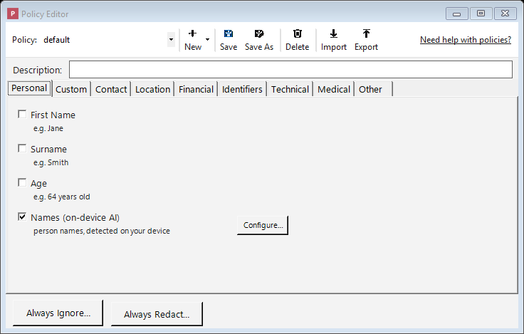
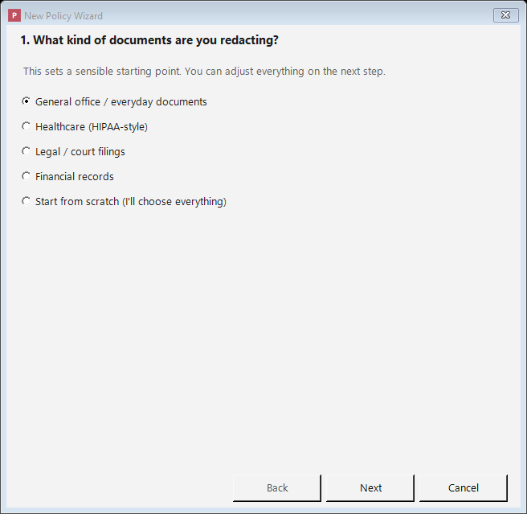

Redaction Policies
A policy is a saved set of rules that tells Philter Desktop two things: which kinds of sensitive information to look for, and how to replace each kind when it's found. Every document you redact is handled according to the policy you've chosen for it.
You don't have to build a policy before you start: a ready-made policy named default is created for you and works well for everyday redaction. As your needs become more specific, you can create your own. For example, you might keep one policy for court filings, another for medical records in a personal-injury matter, and another for financial documents in discovery, each tuned to remove what that kind of document requires. You can create as many policies as you like.
To work with policies, click the Policies button on the main toolbar. This opens the Policy Editor.
A tour of the Policy Editor
The editor has a toolbar across the top and, below it, the kinds of information Philter Desktop can detect, organized into tabs (one category per tab):

The Policy Editor: turn on the kinds of information to remove, organized into category tabs.
- Policy selector: a drop-down for choosing which policy to look at or change.
- New / Save / Save As / Delete: the buttons for managing your policies (covered below). New is a small menu: choose Blank Policy to start from scratch, From Template… to start from a ready-made policy, or From Wizard… to be guided through a few questions.
- Import / Export: Export saves the policy you're editing to a
.jsonfile (for backups or sharing with a colleague); Import loads a policy.jsonfile back in as a new policy. Imported files are checked against the engine's policy schema first, so an invalid file cannot be brought in. - The detector tabs: categories such as Personal, Contact, Location, Financial, Identifiers, Technical, Medical, and Other. Click a tab to see the kinds of information in that category you can remove. Selections on every tab are saved together as one policy; switching tabs doesn't lose anything.
(The word filter is another word for one of these detectors: "the email-address filter," "the Social Security number filter," and so on.)
Turning on what you want removed
- Find the kind of information you want to remove (for example SSN (Social Security number) or Email Address) and check the box next to it. That turns it on.
- When you check a box, a Configure… button appears beside it. Clicking it lets you choose how that information is replaced (for example, blacked out entirely, or swapped for a stand-in label). Those choices are explained on the Filter Strategies page.
You do not have to configure every detector. A detector that's turned on but not configured uses a
default: the detected text is replaced with a marker that names what was removed, like
{{{REDACTED-SSN}}} for a Social Security number. When you open Configure… for a detector you've
just turned on, this default redaction is already listed, so you can see what will happen and
change it if you like (for example, a blackout, a fixed label, or a shuffled stand-in). The quickest
way to build a policy is to check the boxes for everything you want removed and save.
For the complete list of what Philter Desktop can detect, see Supported Filters.
Starting from a template
To start from a ready-made policy rather than from scratch, click New and choose From Template…. Philter Desktop offers a small set of starting points:
- Common PII (recommended): the high-confidence everyday identifiers (Social Security numbers, email, phone, credit cards, dates such as dates of birth, and so on) plus on-device name detection. A safe general-purpose start. (This is also the default policy applied to new documents.)
- HIPAA Safe Harbor (template): broad coverage aimed at the kinds of information called out by the HIPAA Safe Harbor standard (names, dates, locations, ages, and more). Deliberately thorough, so expect to review some over-redaction.
- Legal court filing (template): the personal data commonly redacted in court filings (names, Social Security numbers, dates, and financial account numbers).
- Financial records (template): financial and account data (names, Social Security numbers, credit cards, bank routing numbers, IBAN codes, and crypto addresses).
Pick one, give your new policy a name, and it's created ready to fine-tune like any other policy.
Templates are starting points, not compliance guarantees
A template's name (even one that mentions a law or standard such as "HIPAA Safe Harbor") is for reference only. It is not a certification that the policy, or its output, meets that requirement. Always review and adapt the policy to your situation, and carefully check every redacted document, before relying on it.
Building a policy with the Wizard
Click New and choose From Wizard…. The wizard walks you through a few short questions and builds a policy for you:

The wizard builds a sensible policy for common document types in a few clicks.
- What kind of documents are you redacting? Pick a use case (general office, healthcare, legal, financial, or start from scratch). This sets a starting point; you can change everything next.
- What should be removed? A checklist of the kinds of information, grouped into categories, with the ones from your chosen starting point already ticked. Add or remove whatever you like, including people's names (on-device AI).
- How should the removed information be replaced? Choose a label (like
{{{REDACTED-SSN}}}), a fixed word, or a consistent stand-in value. - Name your policy. Review a plain-language summary and give it a name.
When you finish, the wizard creates the policy ready to fine-tune like any other. The same warning applies: a wizard-built policy is a starting point, not a compliance guarantee. Review it and always check your redacted documents.
Describing a policy
Just below the toolbar is a Description box. Use it to note what the policy is for, for example "Client intake forms: removes SSNs, dates of birth, and contact details." The description helps you and your colleagues recognize the policy later; it has no effect on redaction. It is saved with the policy inside Philter Desktop, but is not included when you Export a policy to a file (the exported file contains only the engine's policy definition).
Saving your work
- Save updates the policy you're currently editing with your changes.
- Save As saves your current settings as a new policy under a new name, for basing a new policy on an existing one without changing the original.
- If you switch to a different policy, or close the editor, with unsaved changes, Philter Desktop asks whether to save first.
The default policy cannot be deleted, so you always have a working starting point.
The "never redact" list (Always Ignore)
Sometimes Philter Desktop correctly detects something you'd rather keep. For example, your own firm's name, a public office address, or a court's phone number might look like contact information that would normally be removed, but you want it left in place.
Click the Always Ignore… button below the tabs and type those terms one per line (or click
Import from file… to load them from a .txt or single-column .csv file). Anything on this list
is left alone, even when a detector would otherwise have removed it.
Matching works on the whole detected value (a detected item that exactly equals one of your terms is left untouched) and ignores capitalization unless you check Match case. The ignore list is saved as part of this policy, so it applies only when you redact with this policy. To ignore a term no matter which policy you use, use the global Lists button on the main toolbar instead; see Lists that apply to every policy.
The "always redact" list (Always Redact)
This is the mirror image of the ignore list. Sometimes a word or phrase should be always removed even though it isn't a standard type of personal information Philter Desktop would recognize on its own: for example, a confidential project codename, an internal matter number, or a name that is sensitive in your case.
Click the Always Redact… button below the tabs and type those terms one per line (or click
Import from file… to load them from a .txt or single-column .csv file). Anything on this
list is removed wherever it appears.
Matching ignores capitalization. These terms are saved as part of this policy and apply only when you redact with it. For a term you want removed in every policy, use the global Lists button on the main toolbar instead; see below.
PDF regions (Always redact a fixed area)
The Policy Editor's PDF Regions… button lets a policy always black out fixed rectangles on a PDF — a signature block, an ID photo, a letterhead, or a stamp — whether or not they contain readable text. See Always blacking out a fixed area.
Lists that apply to every policy (the Lists button)
The two lists above live inside a single policy; they only take effect when you redact with that policy. For a rule that applies no matter which policy is used, use the Lists button on the main toolbar (not in the Policy Editor).
It opens a window with two tabs, each a box where you type terms one per line:
- Always Redact: terms removed from every document you redact, with any policy. Each term is
matched as a whole word, so
Acmeis removed fromAcme, Inc.but not fromAcmeish. To match inside longer words too, add a*wildcard:*acme*matches anywhere,acme*matches words starting with it, and*acmewords ending with it. (Use it deliberately — a short term likea*would remove every word beginning with "a".) - Always Ignore: terms never removed, with any policy.
You can type terms directly, or click Import from file… to load them from a .txt or single-column
.csv file (one term per line); imported terms are added to the current tab, skipping any already in
the list.
Click OK to save both lists (or Cancel to discard changes). These global lists are applied on top of whatever policy is in use: the default policy, policies you create, watched folders, and the command line all honor them.
Policy lists vs. global lists: which should I use?
| Where it lives | When it applies | |
|---|---|---|
| Policy Editor → Always Ignore / Always Redact | Inside one policy | Only when you redact with that policy |
| Lists button (main toolbar) → Always Ignore / Always Redact | App-wide | Every redaction, with any policy |
Put case- or matter-specific terms in a policy; put terms that should always apply, like your own firm's name (ignore) or a standing confidential codename (always redact), in the global Lists.
Detecting names with on-device AI
On the Personal tab is an entry called Names (on-device AI). Checking it turns on a names-specific detector.
Why is this separate from the other detectors? Most sensitive information has a recognizable shape (a Social Security number is always nine digits in a familiar pattern, an email address always has an "@"), so a simple rule can spot it. Names are different. "April," "Hope," and "Mason" can be names or ordinary words; whether something is a name depends on the surrounding sentence. Philter Desktop uses artificial intelligence, a trained model that reads the context and decides what is a name, more reliably than a fixed rule could.
For confidentiality, this AI runs entirely on your own computer. No part of your document is uploaded or sent over the internet.
There's nothing to configure: check the box and save the policy. The first document you redact after turning it on takes a moment longer while the model loads; after that it's quick.
If name detection is unavailable
If the names model is missing for any reason (an unusual or damaged installation, or antivirus quarantining it), Philter Desktop will not quietly pretend to redact names. It shows a yellow warning banner across the top of the main window and of every Redact with Preview window (and a message on the command line), telling you that person names will not be redacted by policies that look for them. Pattern-based detection (Social Security numbers, email, phone, and so on) still works. If you see this warning, reinstall Philter Desktop to restore name detection, and re-redact anything that was processed while it was unavailable.
Redacting your own special identifiers (Custom Identifiers)
Beyond the built-in types, you can teach Philter Desktop to remove information that follows your
organization's own format: for instance, a case number like CASE-2024-00123, a client matter
ID, or an internal account number.
Enable Custom Identifiers, click Configure…, and describe the pattern you want to match, along with a label for it. Patterns use a regular expression, a compact way of saying "match text that looks like this" (for example, "the letters CASE, then a dash, then four digits, then a dash, then five digits"). Regular expressions are a technical skill; if you're not comfortable writing one, ask a technical colleague, or use the Always Redact list above for specific words and phrases, which needs no special syntax.
Some example identifiers and the regular expressions that match them:
| Example identifier | Regular expression |
|---|---|
Case number (CASE-2024-00123) |
\bCASE-\d{4}-\d{5}\b |
Medical record number (MRN-1234567) |
\bMRN-\d{7}\b |
Client matter ID (12345-001) |
\b\d{5}-\d{3}\b |
Internal account number (ACCT-US123456) |
\bACCT-[A-Z]{2}\d{6}\b |
Employee ID (EMP000123) |
\bEMP\d{6}\b |
Invoice number (INV-2024-000123) |
\bINV-\d{4}-\d{6}\b |
Insurance policy number (POL-A1B2C3D4) |
\bPOL-[A-Z0-9]{8}\b |
Patient ID (PT-00123456) |
\bPT-\d{8}\b |
Vehicle Identification Number (1HGCM82633A004352) |
\b[A-HJ-NPR-Z0-9]{17}\b |
Claim number (CLM0123456789) |
\bCLM\d{10}\b |
Adjust these to match your organization's exact format. After redacting, use Verification to confirm the pattern caught what you expected.